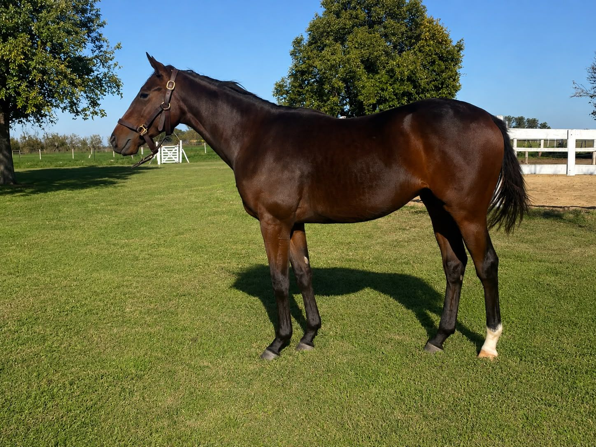

Productos 2024
Formatic
Macho · Zaino · Nacido el 20 de agosto de 2024

Datos
Padre: Pneumatic
Madre: Fortaleza Key
Abuelo materno: Key Deputy
Criador: Haras La Magdalena
Pedigree
Pneumatic x Fortaleza Key por Key Deputy
Familia: 13-c
¿Te interesa este ejemplar?
Solicitá más información, videos, fotos y disponibilidad.
Consultar por Formatic